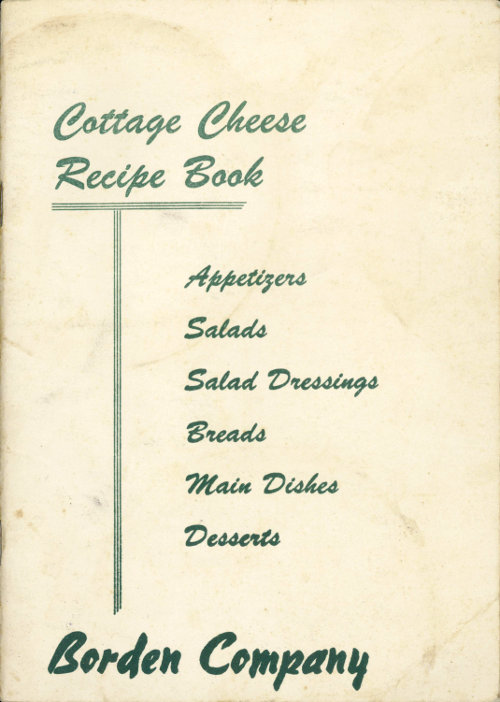
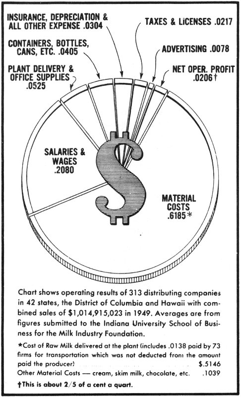

Title: Cottage Cheese Recipe Book
Creator: Milk Industry Foundation
Release date: May 13, 2021 [eBook #65327]
Most recently updated: October 18, 2024
Language: English
Credits: Stephen Hutcheson and the Online Distributed Proofreading Team at https://www.pgdp.net

Appetizers
Salads
Salad Dressings
Breads
Main Dishes
Desserts
Borden Company
Cottage cheese is a concentrated form of milk. One pound of cottage cheese contains most of the protein, calcium, phosphorous, iron, and vitamins found in three quarts of milk.
Three ounces of cottage cheese furnishes about 50% of an adult’s daily requirement for calcium.
Cottage cheese is a complete protein (builds, repairs, and maintains body tissue); therefore, it is particularly desirable for growing children and is an ideal food for adults.
Cottage cheese is easily digested and readily assimilated. It is an important food for the person desiring to lose weight because of its high nutritive value and low caloric content. One ounce of creamed cottage cheese supplies about 30 calories.
In addition to its concentrated food value, cottage cheese is also a very versatile food. It can be served in a variety of tempting ways because it combines nicely with almost any type of food.

WHAT BECOMES OF THE MILK DISTRIBUTOR’S DOLLAR
| SALARIES & WAGES | .2080 | |
| Cost of Raw Milk delivered at the plant | .5146[1] | |
| Other Material Costs—cream, skim milk, chocolate, etc. | .1039 | |
| MATERIAL COSTS | .6185 | |
| INSURANCE, DEPRECIATION & ALL OTHER EXPENSE | .0304 | |
| CONTAINERS, BOTTLES, CANS, ETC. | .0405 | |
| PLANT DELIVERY & OFFICE SUPPLIES | .0525 | |
| TAXES & LICENSES | .0217 | |
| ADVERTISING | .0078 | |
| NET OPER. PROFIT | .0206[2] |
Chart shows operating results of 313 distributing companies in 42 states, the District of Columbia and Hawaii with combined sales of $1,014,915,023 in 1949. Averages are from figures submitted to the Indiana University School of Business for the Milk Industry Foundation.
1 cup cottage cheese
½ teaspoon Worcestershire sauce
2 tablespoons chili sauce
Salt and pepper
12 slices dried beef
Mix cheese, sauces, and seasonings. Spread on beef, roll and fasten with toothpicks.
2 cups sieved cottage cheese
1 tablespoon bouillon paste
few drops onion juice
Drain excess moisture from cottage cheese and force through fine sieve. Combine with bouillon paste and onion juice and beat vigorously to blend. Chill until ready to use. Use as a spread on crisp wafers.
1 pound cream-style cottage cheese
Toasted crackers
Choice of one or more of the following:
Raspberry jam
Strawberry preserves
Currant jelly
Orange marmalade
Drain off excess moisture from cheese and put through a fine sieve or whip until smooth. Pile in a serving dish. In a similar dish or dishes unmold the jelly or jam, and place on one side of a round or square tray. Arrange rows of over-lapping toasted crackers on the other side of tray and serve while crackers are still warm.
1 cup sieved cottage cheese
¼ cup sour cream
Salt and pepper
Mix cheese and sour cream lightly together, just enough to blend. Season to taste. (More elaborate seasonings for cottage cheese are caraway and poppy seeds, garlic and onion salts, and herbs.) Serve as a dip for potato chips.
1 cup sieved cottage cheese
Salt and pepper
Pickle relish
Horseradish
1 Avocado, mashed
Grated onion
Cream or mayonnaise
Blend cottage cheese well with mashed avocado and seasoning. Thin with cream or mayonnaise. Serve as a dip for potato chips.
Combine cottage cheese, anchovies, paprika, and a dash of cayenne. Serve on tiny crackers.
Mix flaked salmon or tuna, lemon juice, olives and/or pickles, minced parsley and blue cheese; serve on rye bread.
Combine cottage cheese, chopped salted peanuts, and mayonnaise. Spread on crackers.
Combine ground dried beef, grated onion, and pickles with cottage cheese. Serve on crackers.
Fill crisp stalks of celery with cottage cheese. Arrange them petal fashion on a round chop plate, and fill the center with olives.
1 cup cottage cheese
¼ teaspoon salt
½ cup chopped stuffed olives
½ cup walnut meats
Mayonnaise to moisten
Roll a spoonful of the mixture in a large, crisp lettuce leaf; slip a ring of green pepper around the center to hold it closed. Chill, then serve with garnish of tomato wedges and cucumber slices. Enough filling for 6 rolls.
2 packages lime-flavored gelatin
3 cups hot water
1½ pounds cottage cheese, well drained
1 tablespoon chopped onion
1 tablespoon vinegar or lemon juice
¼ cup horseradish
2 tablespoons mayonnaise
Dissolve gelatine in hot water. Chill until partially set. Beat until light. Stir in remaining ingredients. Pour into 2½ quart mold which has been rinsed in cold water. Chill until set.
4 cups fresh-cooked (or canned) tomatoes
⅓ cup chopped onion
¼ cup chopped celery leaves
1 bay leaf
2 whole cloves
1 teaspoon salt
2 tablespoons brown sugar
2 tablespoons (2 envelopes) unflavored gelatin
¼ cup cold water
3 tablespoons lemon juice
2 hard-cooked eggs, sliced
Combine tomatoes, onion, celery leaves, bay leaf, cloves, salt and sugar. Simmer 20 minutes; strain. There should be 3⅓ cups. Soften gelatin in cold water, dissolve in hot tomato mixture. Add lemon juice. Dip egg slices in gelatin and arrange against side of mold. Chill until set. Pour in gelatin mixture; chill until firm. Unmold. Garnish plate with endive. Top mold with flower of green pepper petals. Serves 12.
4 hard-cooked eggs, shelled
¼ teaspoon dry mustard
2 teaspoons vinegar
1 tablespoon chopped olives
1 tablespoon pickle relish
½ to ¾ cups cottage cheese with chive
¼ teaspoon salt
⅛ teaspoon pepper
Cut eggs in half lengthwise, remove yolks. Mash yolks; add mustard, vinegar, chopped olives and relish. Add cottage cheese, mix well; season with salt and pepper. Refill egg whites with mixture, piling it high. Sprinkle with paprika, if desired. Serve in lettuce cups.
2 tablespoons plain, unflavored gelatin
½ cup cold water
2 pounds cottage cheese
1 cup cream or top milk
2 tablespoons lemon juice
1 teaspoon onion juice
¼ teaspoon paprika
Salt to taste
Soften gelatin in cold water; dissolve over hot water. Mix cottage cheese, cream, lemon juice, onion juice, paprika, and salt; add dissolved gelatin. Turn into a ring mold that has been rinsed with cold water; chill until firm. Unmold on crisp salad greens and fill center of ring with desired fruit or vegetable salad. Serve with mayonnaise or French dressing. Serves 8.
Peel the avocados, cut each in half lengthwise and remove the pits. For each serving place half of an avocado on curly endive, fill the center with cottage cheese to which has been added some tart French dressing.
6 medium tomatoes
2 cups dry cottage cheese
¼ cup mayonnaise or salad dressing
3 tablespoons chopped pickle
1 tablespoon minced onion
3 tablespoons chopped pimiento
3 tablespoons chopped walnut meats
Peel tomatoes; cut slices from top and scoop out center. Sprinkle with salt; invert to chill. Combine remaining ingredients and mix well; fill tomato cups. Chill thoroughly. Serve on lettuce with additional mayonnaise. Serves 6.
3 cups cooked diced potatoes
½ cup sliced celery
1 tablespoon chopped green pepper
1 tablespoon chopped pimiento
2 tablespoons minced onion
2 tablespoons chopped pickle
1 cup mayonnaise
1 teaspoon salt
⅛ teaspoon pepper
1 teaspoon dry mustard
1 tablespoon lemon juice
1 cup creamy cottage cheese
Combine potatoes, celery, green pepper, pimiento, onion, and pickle. Chill. Blend mayonnaise, seasonings, and lemon juice. Pour over potato mixture; add cottage cheese and toss lightly. Serves 6 to 8. A super picnic salad!
1 package lemon-flavored gelatin
1 cup hot water
1 cup cold water
½ large avocado
1 cup chive cottage cheese
6 tablespoons mayonnaise
⅓ cup chopped pecan meats
Dissolve flavored gelatin in hot water. Add cold water. Chill until syrupy. Mash avocado; mix with cottage cheese, mayonnaise, and nut meats, and add to thickened gelatin. Pour into mold and chill. Garnish with orange slices or segments. Serves 6.
1 cup hot water
1 package lemon flavored gelatin
¾ cup gingerale
1 cup fruit cocktail, drained
juice of ½ lemon
1 cup cottage cheese
¼ cup pecans
4 maraschino cherries, sliced
1 tablespoon cream
1 tablespoon mayonnaise
Stir hot water into gelatin until dissolved. Chill until cool but not thickened. Stir gingerale, fruit cocktail and lemon juice into cooled gelatin; pour into ring mold rinsed in cold water. Chill until firm. At serving time, combine cottage cheese, pecans, cherries, cream and mayonnaise. Unmold fruit gelatin ring; fill center with cottage cheese mixture. Serves 6.
1 pound whole cranberries
2 cups water
2 cups granulated sugar
2 tablespoons plain gelatin
½ cup cold water
Boil cranberries in 2 cups water 5 minutes. Stir in sugar; boil 5 minutes longer. Soften gelatin in ½ cup cold water; dissolve in hot cranberries. Pour into oiled 8-inch ring mold. Chill overnight. Unmold on large salad plate; garnish with crisp lettuce. Pile creamy cottage cheese in center of ring. This recipe is grand for buffet suppers, with chicken or turkey. Serves 8.
1½ cups cottage cheese
¾ cup whipping cream
½ teaspoon salt
¾ cup drained, shredded pineapple
½ cup finely sliced dates
¼ cup mayonnaise, or salad dressing
3 tablespoons lemon juice
Drain off excess moisture from cheese and beat with a fork or electric mixer until smooth. Whip cream until stiff, then fold in cheese. Add seasonings, well-drained pineapple, and dates; pour into a waxed paper-lined freezing tray of the refrigerator. Freeze at coldest temperature. Cut into slices, arrange on salad greens, and serve with additional dressing. (Allow about three hours for freezing salad.) Serves 6. Serve with nut bread and butter sandwiches for Dessert Bridge.
2 cups cottage cheese
2 cups sliced strawberries
3 tablespoons honey French dressing
⅓ cup salad oil
3 tablespoons lemon juice
½ teaspoon salt
⅓ cup strained honey
Beat together the oil, lemon juice, and salt. Add honey slowly while beating. Mix cottage cheese, strawberries, and French dressing. Put on lettuce leaves. Garnish with mayonnaise and whole strawberry.
1 package lemon-flavored gelatin
1 cup hot water
½ cup creamy cottage cheese
1 cup heavy cream, whipped
½ cup broken walnut meats
½ cup maraschino cherries, quartered
1 cup crushed pineapple, well drained
Dissolve gelatin in hot water. Chill until partially set. Fold in cottage cheese and whipped cream, walnuts, cherries and pineapple. Pour into 1-quart refrigerator tray. Chill until firm. Cut in squares to serve. Serves 8. Delicious as salad or dessert!
2 packages lemon-flavored gelatin
¼ teaspoon salt
1 cup hot canned peach syrup
1½ cups hot grapefruit juice
1½ cups drained sliced canned cling peaches
2 tablespoons chopped pimiento
1¼ cups cottage cheese
½ cup chopped celery
2 tablespoons chopped parsley
1½ teaspoons grated onion
½ teaspoon salt
Salad greens
Dissolve gelatin and ¼ teaspoon salt in hot syrup and fruit juice. Cool until slightly thickened. Arrange peaches and pimiento in bottom of oiled 9x5x3-inch loaf pan and cover with half the gelatin mixture. Chill until firm. Add cottage cheese, celery, parsley, onion, and ½ teaspoon salt to remaining gelatin and blend. Turn into pan over firm peach layer. Chill until firm. Unmold on crisp greens. Serve in slices. Makes 8 to 10 servings.
1 tablespoon unflavored gelatin
¼ cup cold water
1½ cups cottage cheese
2½ tablespoons Roquefort cheese
¼ teaspoon salt
¼ teaspoon paprika
½ cup heavy cream, whipped
Fruit salad
Soften gelatin in cold water; dissolve over hot water. Press cottage and Roquefort cheese through sieve and mix thoroughly with gelatin, salt and paprika. Fold in whipped cream. Pour into ring mold and chill until firm. Unmold and fill center with fruit salad. Serve with mayonnaise mixed with whipped cream. Serves 6.
1 cup cottage cheese
2 tablespoons mayonnaise
¼ teaspoon paprika
1 teaspoon Worcestershire sauce
Salt and pepper to taste
Combine all ingredients and blend well. Makes about 1 cup dressing.
½ cup cottage cheese
½ cup cream
½ cup lemon juice
½ teaspoon salt
1 tablespoon honey or sugar
1 tablespoon chopped chives
Dash paprika
Beat all ingredients together until smooth. Makes 1⅓ cups.
1 cup cottage cheese
2 tablespoons vinegar
3 tablespoons sugar
¼ teaspoon salt
¼ teaspoon paprika
¼ teaspoon prepared mustard
4 tablespoons catsup
Combine all ingredients, blend well.
1 cup sifted flour
1 teaspoon baking powder
½ teaspoon salt
1 teaspoon sugar
2 egg yolks, slightly beaten
1 cup milk
2 tablespoons melted butter
2 egg whites, stiffly beaten
Sift flour once, measure, add baking powder, salt and sugar, and sift again. Combine egg yolks and milk. Add gradually to flour mixture, beating only until smooth. Add shortening. Fold in egg whites. Bake on hot greased griddle. Spread with creamy cottage cheese, topped with strawberry preserves.
1 cake fresh yeast
¼ cup lukewarm water
¾ cup milk
2 tablespoons butter
¼ cup sugar
1 teaspoon salt
1 egg, beaten
3 cups sifted all-purpose flour
1 cup cottage cheese
½ cup peanut butter, crunch style
Soften yeast in lukewarm water. Heat milk to boiling point; remove from heat and add butter, sugar, and salt. Cool to lukewarm; add yeast and egg. Stir in flour, making a soft dough. Knead until satiny; place in a bowl and cover with a damp cloth. Allow to rise until doubled in size, about 1 to 1½ hours. Punch dough down and let it rest 10 minutes before rolling out ¼ inch thick. Spread with filling; roll it up as for jelly roll, and cut off 1-inch slices. Place cut side down on greased baking sheet 1 inch apart. Cover, let rise until light. Bake in hot oven (400° F.) 15 to 20 minutes.
2 eggs
1 cup water
Dash of salt
4 tablespoons flour
Beat two eggs. Add water and salt. Pour into flour slowly, stirring vigorously to obtain a smooth, thin batter. Pour about one tablespoon of batter into a small slightly greased frying pan, spreading very thin over the entire bottom. Cook over low heat on one side only, until it will hold its shape, but does not brown. Turn out on cloth or paper and repeat with the rest of the batter.
1 egg
1½ cups cottage cheese
1 tablespoon melted butter
¼ teaspoon salt
1 teaspoon sugar
¼ teaspoon cinnamon
¼ cup raisins (if desired)
Beat egg well. Add cottage cheese, melted butter, and seasoning. If desired, ¼ cup raisins. Place 1 heaping tablespoon of the cheese mixture on each blintze. Fold the edges over the filling and press in well. Cook in butter until brown on both sides. Serve with sour cream.
1 cup sifted all-purpose flour
¼ teaspoon salt
½ teaspoon baking powder
⅓ cup butter or substitute
1 tablespoon milk
½ cup cottage cheese
Paprika
½ teaspoon celery seed (optional)
Sift together flour, salt, and baking powder. Cut in butter. Add milk to cottage cheese, then stir into flour mixture. Round dough upon floured board and roll it to ⅛-inch thickness. Cut into ½-inch strips. Place strips on baking sheet and brush with milk; sprinkle with paprika and celery seed. Bake in hot oven (425° F.) 10 to 12 minutes until lightly browned.
2 cups cooked lima beans (drain thoroughly)
1½ pounds cottage cheese
1 small can pimientos
1 cup bread crumbs
1 teaspoon salt
½ teaspoon pepper
1 can condensed tomato soup
Put beans, cottage cheese and pimientos through a meat chopper, using coarse blade. Mix well. Add bread crumbs and seasonings and form into a roll. Bake in slightly greased pan, uncovered at 350° F., for about 30 minutes. Heat the tomato soup, pour over the loaf and bake about 15 minutes longer. Slice and serve with the tomato sauce.
2 tablespoons butter
¼ cup diced onion
2 cups hot cooked potatoes
1 3-oz. can chopped broiled mushrooms
1 pound creamed cottage cheese
½ cup sour cream
1 teaspoon salt
⅛ teaspoon pepper
½ teaspoon gravy maker
2 eggs, well beaten
1 9-inch pastry shell, unbaked
Melt butter in small saucepan. Add onion and cook over moderate heat five minutes, stirring occasionally. Meanwhile, cook and sieve potatoes. Stir in mushrooms, cheese, sour cream, salt, pepper, gravy maker and onions. Mix thoroughly. Fold in beaten eggs. Pour into unbaked shell. Bake at 375° F., about one hour, or until puffy and brown. Serve hot as main dish.
½ cup sliced green onions
¼ cup butter or cooking fat
2 cups cooked macaroni
2 cups cottage cheese
2 tablespoons minced pimiento (optional)
2 cups milk
4 eggs, beaten slightly
Salt, pepper, celery seed to taste
1 cup ripe olives, seeded
½ cup minced parsley
Saute onions until soft, but not brown. Combine with all remaining ingredients and pour into deep, bright pottery casserole. Bake an hour at 350° F. Garnish top with paprika before serving.
1 unbaked 9-inch pie shell
2 cups cottage cheese
3¼ cups sour cream
2 cups hot mashed potatoes
1 teaspoon salt
3 tablespoons finely chopped onion
3 tablespoons chopped pimiento
2 eggs, well beaten
1½ tablespoons butter
Blend cottage cheese and sour cream together. Beat in mashed potatoes. Mix thoroughly. Add salt, onion, pimiento. Fold in beaten eggs. Pour into unbaked pie shell, dot with butter. Bake in moderate oven (350° F.) 1¼ hours, until golden brown. Serve hot as main dish. (Many French families like this pie cold, with mixed green salad and a hot soup.)
2 tablespoons butter
2 tablespoons flour
¾ cup milk
1 teaspoon curry powder
½ teaspoon onion juice
1½ cups cottage cheese
Salt and pepper
6 hard-cooked eggs
Hot boiled rice
Melt butter in a double boiler. Add flour and mix well. Add milk gradually and cook, stirring constantly, until thickened. Add curry powder, onion juice, cottage cheese, and salt and pepper to taste. Fold in the diced eggs, reserving six slices for garnish. Reheat. Serve on nests of rice. Serves 6.
1 batch biscuit dough or mix
1 green onion, with stem, minced
1 7-oz. can flaked tuna
1 cup cottage cheese
1 4-oz. can mushrooms, with juice
1 small onion
2 tablespoons butter
2 tablespoons flour
½ teaspoon salt
⅛ teaspoon pepper
1½ cups milk
Make your favorite biscuit dough, or prepared mix. Combine onion, tuna, cottage cheese. Roll dough ¼ inch thick, spread with tuna mixture; roll as for jelly roll. Cut in ½ inch slices; place 1 inch apart on greased cookie sheet. Bake 20-25 minutes at 250° F. Sauce: Chop mushrooms and onion; saute in butter. Shake flour and seasonings in small jar with mushroom juice. Add to mushroom and onion; blend in milk. Stir constantly over low heat until thickened. Pour over pinwheels, allowing 2 per serving. Serves 6.
1 egg plant
1 cup cottage cheese (dry)
3 slices bread
½ onion, sliced
1 green pepper, chopped
1 whole pimiento, chopped
pepper and marjoram
1 egg
2 tablespoons butter
Paprika
½ teaspoon salt
Peel the egg plant and cube. Put in a sauce pan with ½ cup water and cook covered for 15 minutes. Add unbeaten egg and 2 slices bread, flaked. Stir in cottage cheese, onion and seasoning. Pour into buttered casserole. Flake 1 slice bread over top, dot with butter, and sprinkle with paprika. Bake in 350° F. oven for 45 minutes. Serves 4-6.
Two kinds of cheese, cottage and a sharp Cheddar type, give this macaroni dish unexpected flavor. It is complete enough for the main part of a meal, a recipe that you will use frequently.
3 cups cooked macaroni
1 cup cottage cheese
1 cup sour cream
¼ cup chopped onions
1 teaspoon Worcestershire sauce
½ teaspoon salt
4 drops Tabasco sauce
2 tablespoons chopped parsley
¼ cup grated Cheddar-type cheese
Combine all ingredients except grated cheese. Place in greased casserole. Sprinkle with cheese. Bake in a moderate oven (350° F.) about 40 minutes. Serves 4 to 6.
2 cups cottage cheese
1 can tuna (7 oz.)
½ cup dry bread crumbs
2 eggs, beaten
½ teaspoon salt
¼ teaspoon pepper
¾ teaspoon celery salt
Dash of steak sauce
2 tablespoons butter
Combine cheese, tuna, ¼ cup bread crumbs, and seasonings. Blend into beaten eggs. Place in oiled casserole (1 quart). Sprinkle with remaining crumbs, buttered. Set in pan of hot water; bake in moderate oven (375° F.) about 30 minutes or until mixture is firm. Serves 4.
1 cup sieved cottage cheese
1 cup dry bread crumbs
¾ teaspoon salt
¼ teaspoon onion salt
1 teaspoon chopped parsley
½ cup chopped peanuts
1 egg, beaten
Combine cottage cheese, ¾ cup bread crumbs, salt, onion salt, parsley and peanuts with beaten egg; mix well. Shape into patties; roll in remaining bread crumbs. Bake in greased muffin tins in hot oven (400° F.) 10 minutes. Served with spicy Spanish sauce.
1½ cups cottage cheese
1½ cups cooked rice or fine noodles
1 cup finely diced or chopped cooked meat
1 tablespoon chopped green pepper
1 teaspoon minced onion
¾ teaspoon salt
¼ cup milk
3 eggs, slightly beaten
1¼ cups tomato juice
2 tablespoons butter
2 tablespoons flour
½ teaspoon sugar
Salt and pepper to taste
Combine cottage cheese, rice or cooked noodles, meat, green pepper, onion, salt, milk and eggs and blend. Fill well oiled custard cups with the mixture and set in a shallow pan of water. Bake in a 350° F. oven for about 45 minutes, or until a knife inserted in the center comes out clean. Unmold and serve with tomato sauce.
Melt butter in a small saucepan, add flour and blend. Add tomato juice and cook and stir until smooth and thickened. Season with sugar, salt and pepper. Serve over cottage timbales. Serves 6.
4 tablespoons butter
2 tablespoons flour
½ teaspoon dry mustard
2 cups buttermilk
Salt and pepper to taste
Dash of cayenne
½ cup cottage cheese
Melt the butter in a saucepan. Add flour and mustard, blending well. Then slowly stir in the buttermilk. Cook slowly for about three minutes, then add the cottage cheese and other seasonings. One hard-boiled egg, chopped fine, may also be added. Serve on hot buttered toast.
1 cup cottage cheese
¼ cup buttermilk
1 cup soft bread crumbs
3 eggs
4 tablespoons butter
3 tablespoons flour
¼ teaspoon salt
½ teaspoon baking soda
Dash of cayenne
Melt butter in skillet, add flour, salt and cayenne. Mix thoroughly, add all the buttermilk at once and stir until smooth. Then add the cottage cheese, soda and bread crumbs. Beat the eggs until light and fluffy and add to the cheese mixture. Pour into a well-greased baking dish, and bake for about 30 minutes at 350° F. Serve at once with a hot cheese sauce, made by adding snappy American or Cheddar cheese to a medium white sauce.
6 medium onions
¾ cup cottage cheese
2 tablespoons finely chopped green pepper
3 slices bacon cut in strips and fried crisp
1 teaspoon salt
⅛ teaspoon pepper
¼ cup buttered bread crumbs
4 strips pimiento
Peel onions and cook in boiling salted water until just tender (about 20 minutes). Drain and cool. Remove centers, leaving a thin shell. Chop ½ cup of centers coarsely. Combine with cottage cheese, green pepper, bacon, salt, and pepper. Mix well. Stuff onion shells and place in greased baking dish. Garnish with bread crumbs and pimiento. Pour 1 teaspoon bacon drippings over each onion. Cover and bake in moderate oven (350° F.) for 20 minutes. Uncover and brown 10-15 minutes. Serves 6.
2 pounds large sweet potatoes
3 large oranges
1 cup cottage cheese
¼ teaspoon ginger
1 teaspoon salt
Boil potatoes. Peel and mash thoroughly. Cut oranges in halves, remove pulp, discard white pith and membrane. Combine orange segments and juice with ginger, cottage cheese, mashed sweet potatoes. Fill orange shells. Broil in slow oven (350° F.) until glazed. Serve immediately. Sensational with buffet ham. Serves 6.
4 eggs, separated
½ teaspoon salt
⅛ teaspoon pepper
¼ cup milk
¾ cup cottage cheese
3 tablespoons chopped canned pimiento
1 tablespoon butter
2 tablespoons chopped parsley
Beat egg yolks until thick; add salt, pepper, milk, cheese and pimiento. Fold in stiffly beaten egg whites. Place butter in skillet, heat well and add omelet. Cook slowly until firm and browned on bottom. Bake in moderate oven (350° F.) 10 to 15 minutes or until browned on top. Crease, fold, slip onto hot platter and garnish with parsley. Serves 6.
3 tablespoons butter
3 tablespoons flour
Salt and pepper to taste
1 cup milk
½ teaspoon minced pimiento
¼ teaspoon Worcestershire sauce
2 hard cooked eggs, sliced
1 cup cottage cheese
Melt butter. Blend in flour, salt, pepper. Gradually stir in milk; cook until thick and smooth, stirring constantly. Season with pimiento and Worcestershire. Add sliced eggs and cottage cheese. Heat. Serve on buttered toast.
Halve large baked potatoes. Scoop out centers. Mash thoroughly. For 6, combine 2 cups cottage cheese and one egg. Mix with potatoes. Season. Refill shells. Dust with paprika: Return to hot oven. Bake until brown on top.
Mash potato thoroughly with desired milk and seasoning. Blend about 1 part cottage cheese to 4 parts potato. Place in casserole, dust with paprika and brown in oven. Add chopped parsley as garnish, before serving.
For a crusty brown topping on oven dishes, spread them generously with cottage cheese; sprinkle with bread crumbs, and bake.
Use cottage cheese as a topping for one-crust berry pies.
Add approximately ½ cup cottage cheese to scrambled eggs to extend flavor and quantity. Cook over low heat.
Spread cottage cheese on thin French pancakes, roll up, and fry lightly; and serve with sour cream and jam, or sugar and cinnamon.
2 cups cottage cheese
4 eggs, beaten slightly
1 quart milk, scalded
3 tablespoons flour
½ teaspoon salt
½ cup sugar
1 teaspoon vanilla extract
¼ teaspoon almond extract
Put cottage cheese through a sieve. Beat eggs together slightly; add scalded milk, stirring to blend. Mix dry ingredients; add sieved cottage cheese. Gradually stir in milk-egg mixture; add vanilla and almond extract. Pour into a well-buttered 8-inch glass baking dish. Place in a pan of hot water and bake in a moderate oven (325° F.) for 1½ hours or until a knife inserted in the center comes out clean; let cool. Serves 6 to 8.
½ cup melba toast crumbs, rolled and sifted
1 cup sugar
¼ cup butter, melted
2 egg yolks
Juice of 1 lemon
Rind of 1 lemon, grated
¼ teaspoon mace
¼ teaspoon salt
2 cups cottage cheese
3 tablespoons flour
½ cup milk
½ cup whipping cream
2 egg whites
⅓ cup nut meats, chopped
Combine crumbs, ½ cup sugar, and butter; line buttered baking dish. Beat egg yolks with remaining sugar, add lemon juice and rind, mace and salt, then cottage cheese and flour blended with milk. Mix all thoroughly and sieve. Add whipped cream and stiffly beaten egg whites. Mix lightly and pour into crumb-lined baking dish, sprinkle with nut meats. Set in pan of hot water and bake in a moderate oven (325° to 350° F.) 1 hour. Serve cold with whipped cream or crushed strawberries. Serves 8.
In these refrigerator cookies the cheese provides the liquid content.
½ cup shortening
½ cup sugar, brown or granulated
1 egg
1¾ cup sifted all-purpose flour
½ teaspoon soda
½ teaspoon salt
½ teaspoon cinnamon
¼ teaspoon each nutmeg and cloves
⅓ cup cottage cheese, sieved
Cream shortening and sugar together; beat in egg. Sift flour with soda, salt, and spices into bowl; add cottage cheese. Stir together to make a stiff dough. Form into roll; wrap in waxed paper and chill well in the refrigerator. Slice thin, and bake in a moderate oven (375° F.) 10 minutes or until lightly browned. Makes about 2½ dozen cookies.
½ cup butter
2 cups brown sugar, firmly packed
Grated rind of 1 lemon
1 egg
2 cups sifted cake flour
1 teaspoon salt
1 cup chopped raisins
2 cups creamed cottage cheese (or 2 cups dry cottage cheese plus 3 tablespoons milk)
½ teaspoon soda
Cream butter and one cup of the brown sugar until light and fluffy. Add lemon rind and egg and beat well. Add cottage cheese and second cup of brown sugar and mix thoroughly. Sift flour once, measure, and resift with the dry ingredients. Blend with cottage cheese mixture. Fold in raisins. Bake in greased muffin pans at 350° F., for 30 minutes, or until done. Serve warm. Makes about 2 dozen cupcakes.
2 tablespoons unflavored gelatin
¼ cup cold water
4 eggs, separated
1 cup table cream
¾ cup sugar
2 cups cottage cheese, sieved
½ teaspoon salt
1 teaspoon vanilla
Juice of 2 lemons
Grated peel of 1 lemon
½ cup heavy cream, whipped
2 cups graham cracker or zweiback crumbs
½ cup melted butter
¼ cup confectioner’s sugar
Soften gelatin in water for 5 minutes. In the top of the double boiler beat egg yolks slightly; stir in softened gelatin, table cream, and sugar. Place over boiling water and cook, stirring constantly, until the mixture coats a spoon. Remove from heat; stir in cottage cheese, salt, vanilla, lemon juice, and peel. Cool. Fold in cream. While filling is cooling, combine ingredients for crust; take out ⅓ of mixture and set aside. Use remainder of crumbs to line bottom and sides of a spring mold or deep 9-inch layer cake pan. Pour filling into pan. Sprinkle remaining crumbs on top. Chill several hours before serving.
2 cups fine melba toast crumbs
1½ cups sugar
1 teaspoon cinnamon
½ cup melted butter
6 eggs
1½ tablespoons lemon juice
½ teaspoon salt
½ cup coffee cream
3 cups cottage cheese sieved
¼ cup flour
2 teaspoons grated lemon rind
¼ cup chopped nuts
1 teaspoon vanilla
Combine crumbs with ½ cup sugar, cinnamon, and butter. Reserve ¾ cup of mixture for top and press balance into bottom of a 9-inch pie pan. Beat eggs and add sugar gradually. Add lemon juice, salt, cream, cheese and flour. Mix well. Add rind. Pour into pie tin and sprinkle with reserve crumbs. Bake 1 hour in moderate oven (350° F.). Chill and remove from pan.
1 unbaked 9-inch pastry shell
1½ cups thinly sliced raw apples
2 eggs
¾ cup cottage cheese
½ cup sugar
½ cup cream
½ teaspoon salt
1 teaspoon grated lemon rind
3 tablespoons sugar
½ teaspoon cinnamon
Dash of nutmeg
Line a pie pan with pastry and cover the bottom with the sliced apples. Beat the eggs slightly, add the cottage cheese, ½ cup of sugar, cream, salt and lemon rind. Mix 3 tablespoons of sugar with the cinnamon and nutmeg, sprinkle this over the apples, then cover them with the cottage cheese mixture. Bake in a moderately hot oven (425° F.) 10 minutes; reduce the heat to a moderate oven (350° F.) and bake 30 minutes longer.
1 pound cottage cheese
⅓ cup sugar
¼ cup milk
3 eggs, beaten
½ teaspoon salt
½ cup chopped raisins or dates
Rind and juice of 1 lemon
1 teaspoon melted butter
½ recipe pastry
Press cheese through a fine sieve. Add next 7 ingredients and stir until well mixed. Line a deep pie pan with pastry and bake in hot oven (450° F.) until crust is very light brown. Fill with cheese mixture and continue baking in moderate oven (350° F.) until filling is firm, 15 to 20 minutes. Makes 1 (9-inch) pie.
1 cup sifted flour
¼ teaspoon salt
¼ cup shortening
½ teaspoon grated lemon rind
1½ tablespoons lemon juice
1 tablespoon ice water
2 teaspoons beaten egg yolk
Sift together flour and salt. Cut in shortening and lemon rind. Beat together lemon juice, water and egg yolk. Stir lightly into flour mixture. Form into ball; wrap in waxed paper and chill. Roll out dough and line 9-inch pie plate. Prick well; bake 10 to 15 minutes in moderately hot oven (425° F.).
Line shell with 1 pint creamed cottage cheese, mixed with 1 tablespoon grated lemon rind. Fill with 1 No. 2½ can fruit cocktail, chilled and drained. Garnish with mint. Serves 8.
2 eggs
½ cup melted butter
2 tablespoons flour
1 cup sugar
2 teaspoons vanilla
2 teaspoons lemon juice, or 1 teaspoon grated lemon rind
1½ cups buttermilk
½ pound cottage cheese
Pastry
Beat egg yolks slightly; add butter, and beat until thoroughly blended. Beat in flour, ½ cup sugar, vanilla, lemon juice, buttermilk, and cottage cheese that has been pressed through a sieve. Beat egg whites, add ½ cup sugar gradually, and beat until stiff; fold into mixture. Pour into 9-inch pie pan lined with pastry; bake in a hot oven (450° F.) for 15 minutes, then lower temperature to slow (300° F.) and continue baking 40 minutes, or until set. Chill before serving. Note: there’s an abundance of filling here so you should roll out the pastry until the circle is about 4 inches larger than the top diameter of the pie plate. Fit the pastry into the pan, then trim with shears, leaving a 1½ inch overhanging border. Fold this border up and make an upright double-fold rim; flute with fingers.
¾ cup sieved cottage cheese
¼ pound Roquefort cheese, sieved
1 tablespoon sour cream
Few drops Worcestershire Sauce
Crackers
Fruit
Mix cottage cheese, Roquefort cheese and sour cream just enough to blend. Add Worcestershire sauce to taste. Serve in bowl. Six servings. Mellow cheese served with tart fruit and crackers makes an elegant dessert.
For additional copies of this booklet mail 15c coin or stamps to
MILK INDUSTRY FOUNDATION
1625 Eye Street
Washington 6, D. C.